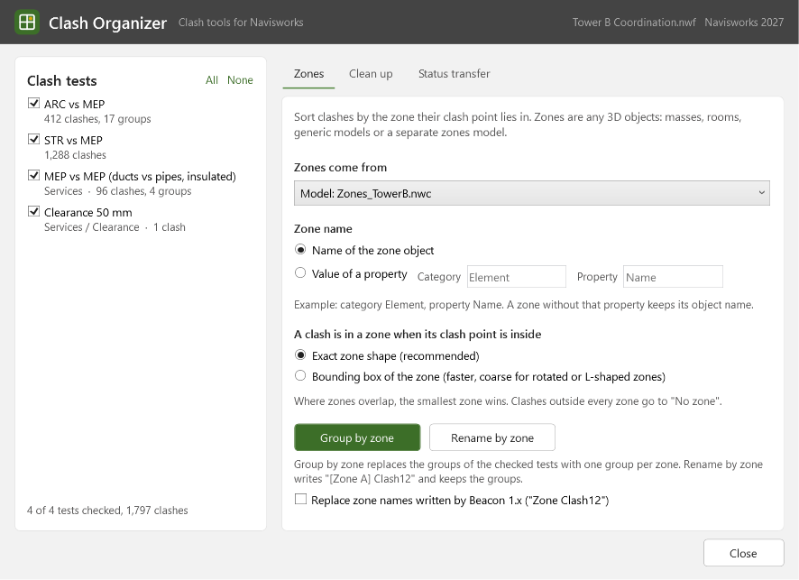
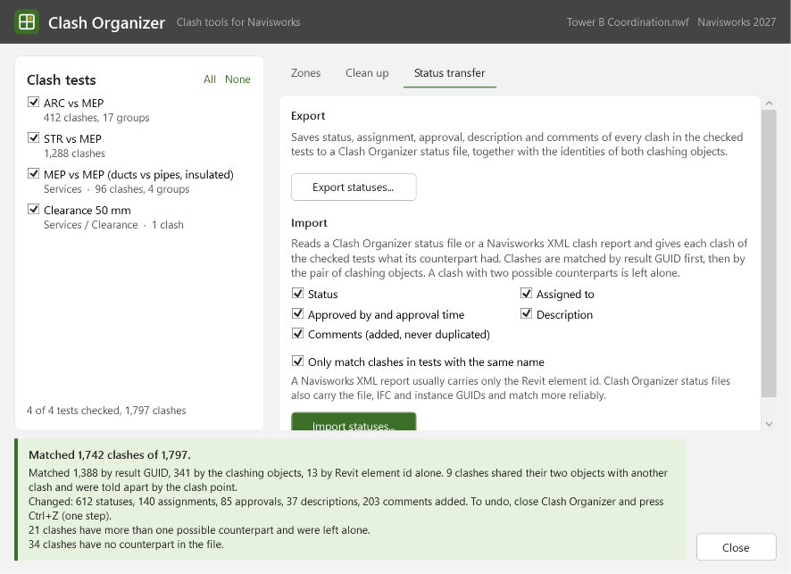
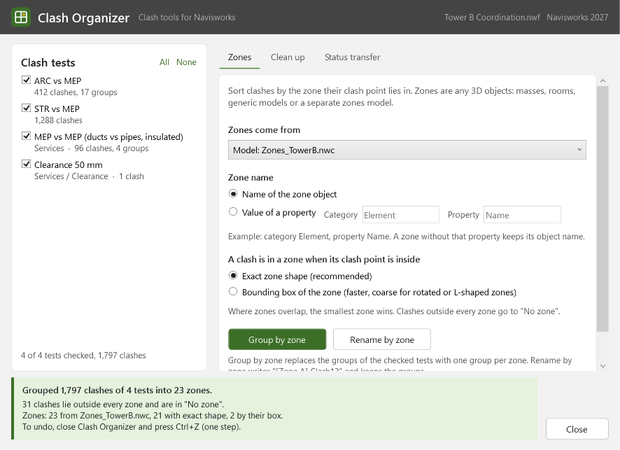
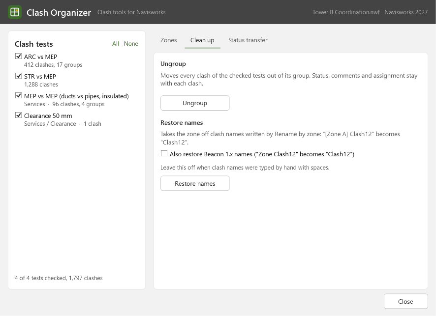
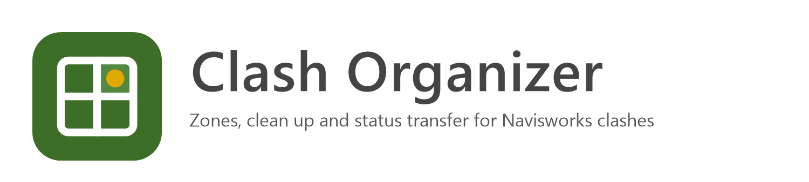

Clash Organizer
4,000 clashes, 200 actual problems.
- C#
- Navisworks API 2022 to 2027
- WPF
- xUnit
Before construction, the models from every discipline are combined and checked by software for places where elements collide, such as a pipe passing through a beam. These collisions are called clashes, and a single check can report thousands. Clash Organizer groups them by area of the building so that each team can see its share, and carries notes and decisions over when the check is repeated.
The problem
A clash run can report thousands of clashes when the real coordination problems number a few hundred. Sorting them by area manually, and losing every status and comment when the test is rerun, can take days.
The solution
Clash Organizer is an add-in for Navisworks Manage 2022 to 2027. It has three functions.
Zones. Clashes are grouped by the zone in which they are located, with one group per zone, or the zone name is placed in front of each clash name. A zone can be any 3D object: a mass, a room, or a separate zones model. The actual shape is used, not a bounding box, and where zones overlap the smallest one takes precedence.
Status transfer. The status, assignee, approval, description and comments of each clash are saved and then restored to the same clashes in the same file or in another one, including from a Navisworks XML clash report. Clashes are matched first by their unique ID and then by the pair of elements.
Clean-up. Clashes can be taken out of their groups again, and zone names can be removed from the clash names.
Features
- Groups clashes by the zone their clash point lies in, one group per zone, or adds the zone in front of each clash name
- Zones can be any 3D objects: masses, rooms, generic models or a separate zones model
- Uses the real zone shape, with a simple bounding box as a faster option for simple zones
- Where zones overlap, the smallest wins; clashes outside every zone go to a "No zone" group
- The zone name comes from the object's name or from any of its properties
- Saves the status, assignee, approval, description and comments of clashes to a file
- Loads them onto the same clashes in this or another Navisworks file, also from a Navisworks XML clash report
- Matches clashes by their unique ID first, then by the pair of clashing elements; a clash with two possible matches is left alone
- Clean up: moves clashes out of their groups, or removes the zone names again
- Every action applies to the selected clash tests and is a single undo step
- One add-in for Navisworks Manage 2022 to 2027, with its own ribbon tab, keyboard shortcuts and a per-user install
Glossary
- Navisworks
- Autodesk software that combines the models of all disciplines into one and checks them for clashes.
- Add-in
- A small program that runs inside another program, here inside Revit or Navisworks, and adds new buttons and features to it.
- Clash
- A place where two parts of a building model collide, for example a pipe running through a beam.
Gallery
Screenshots and demonstrations




